Крок 2 з 2. Подача заяви через Mercurio: кожен екран і кожне поле
Mercurio V. 4.1.6EX-26, ст. 191.3Перевірено на реальній подачі, листопад 2026
Спершу — Крок 1: підготовка документів. Ця сторінка — для моменту, коли всі файли вже лежать в одній папці, підписані й перевірені. Скріншоти — з реальної подачі, персональні дані на них розмиті. Приклад — вигадана Оксана Шевченко, autónoma з Аліканте (див. Крок 1).
Перед стартом
Ви фізично в Іспанії — на одному з екранів це треба буде підтвердити під вашу відповідальність
Встановлена остання версія AutoFirma (завантажити) — без неї Mercurio не дасть подати
У браузері встановлено ваш цифровий сертифікат (або є Cl@ve)
Під рукою: паспорт, NIE, адреса з падрону, телефон, e-mail і заповнений EX-26 як шпаргалка
Є 30–40 хвилин без поспіху: завантаження ~20 файлів по одному займає час
1Відкрийте mercurio.delegaciondelgobierno.gob.es/mercurio/. Відкриється вітальна сторінка — у рамці міністерство саме підтверджує, що з 8 квітня це нова адреса Mercurio. Натисніть CONTINUAR.
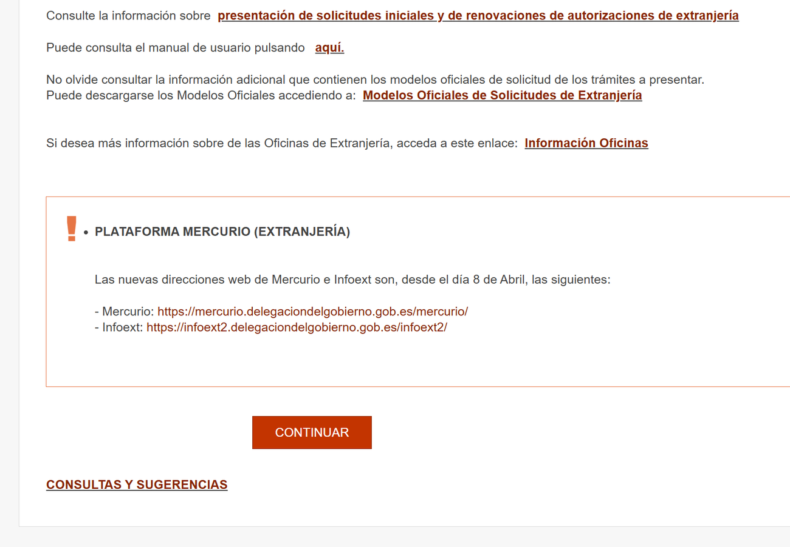
Вітальна сторінка. Посилання «aquí» веде на офіційний посібник користувача.
2Виберіть «Individual» — ви подаєте від себе, без представника (варіанти для колективних подач і колегій — не для вас).
3Відкриється державна система входу Cl@ve: виберіть вхід із сертифікатом (або Cl@ve PIN / Permanente) і підтвердіть сертифікат у вікні браузера.
А якщо замість вибору сертифіката — червоний хрестик і «202002 - invalid.connector.samlrequest … untrusted.certificate»? Це збій на боці сервера, не вашого сертифіката: Cl@ve не довіряє запиту від Mercurio, тому до вибору сертифіката справа навіть не доходить. Інший браузер чи інкогніто не допоможуть. Спробуйте через кілька годин — у нашому випадку того ж дня все запрацювало.
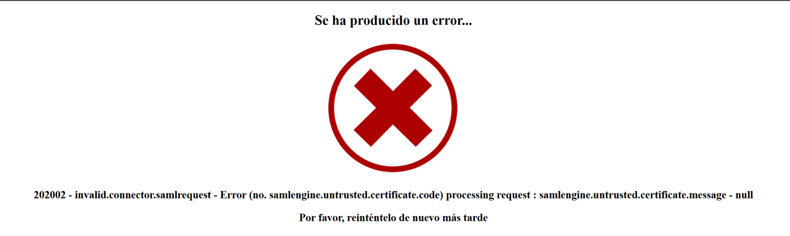
Помилка 202002 — чекайте, поки виправлять.
4Після входу вгорі праворуч з'являться «AC. INDIVIDUAL», ваше ім'я та NIE. На сторінці «Opciones disponibles» натисніть праву кнопку «CONTINUAR PRESENTACIÓN» (Presentar solicitud o aportar documentos). Ліва кнопка — щоб пізніше дізнатися номер справи.
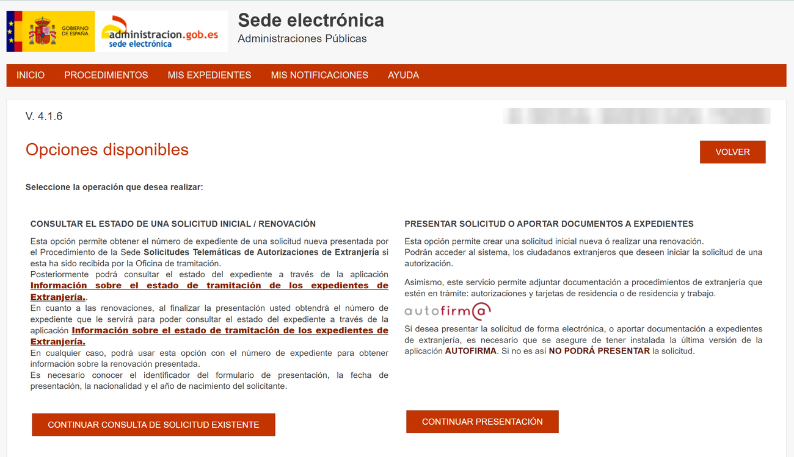
Права кнопка — нова подача; ліва знадобиться після подачі.
5У вікні «Opciones» відмітьте «Presentar nueva solicitud», у списку поруч виберіть свою провінцію → CONTINUAR.
«Presentar renovación» — ні: у вас не продовження, а перехід на інший вид дозволу (за ст. 191.3 він вважається початковим).
«Solicitud aplicación disposición transitoria segunda RD 1155/2024» — ні: це для заяв за старим регламентом.
«Aportar documentos a expedientes» — знадобиться пізніше, якщо офіс попросить донести документ.
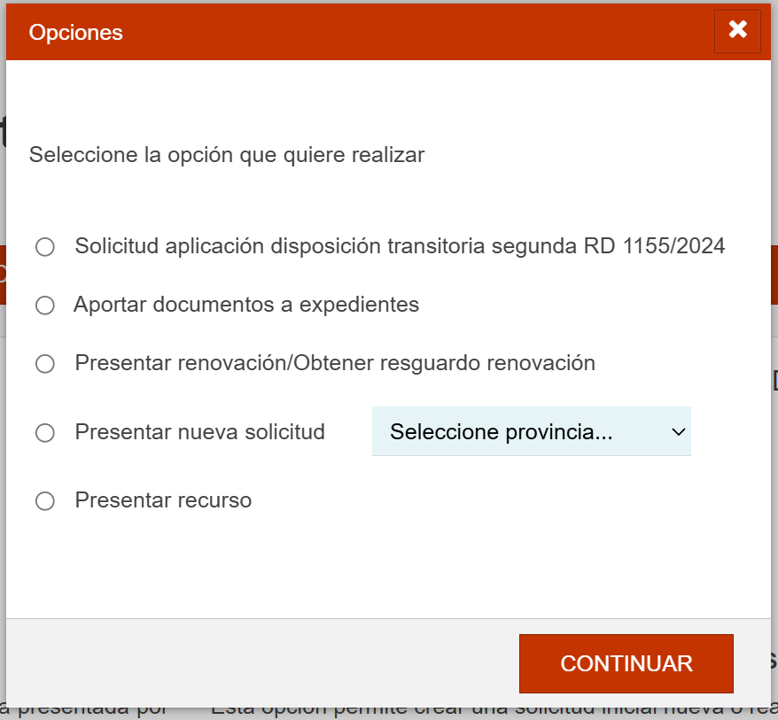
«Presentar nueva solicitud» + провінція.
6Зі списку «Solicitudes permitidas en la provincia de …» виберіть останній пункт — «EX26 - Solicitud de modificación de autorización de residencia o estancia».
Чому не EX07 («residencia temporal y trabajo por cuenta propia»)? EX07 — для першої заяви на такий дозвіл, зазвичай з-за кордону. Ви ж змінюєте чинний дозвіл (тимчасовий захист) — це модифікація, тобто EX26. EX03 — так само не підходить для cuenta ajena: теж EX26.
2. Онлайн-форма: 4 вкладки
Форма — це той самий EX-26, розбитий на вкладки: TIPO DE AUTORIZACIÓN → DATOS DEL EXTRANJERO/A → DATOS DEL EMPLEADOR/A → DOMICILIO DE NOTIFICACIÓN. Кожна закінчується кнопкою CONTINUAR. Поля із зірочкою (*) — обов'язкові.
Вкладка 1. TIPO DE AUTORIZACIÓN
7Відмітьте одну радіокнопку: у першому блоці («…QUE HABILITEN A TRABAJAR…»), під рядком «Desde autorización de residencia que lleve residiendo más de un año (artículo 191.3)» → «A autorización de residencia y trabajo por cuenta ajena y propia».
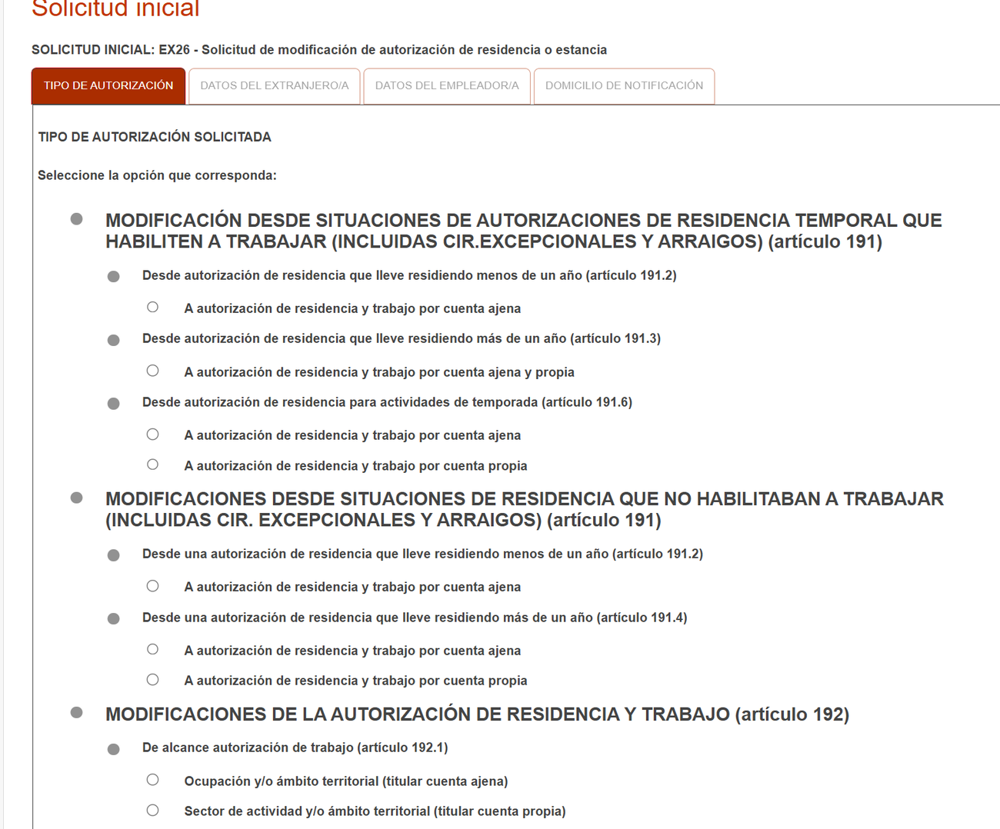
Потрібна радіокнопка — друга зверху, під 191.3.
Прокрутіть донизу. Чекбокс «NO CONSIENTO la consulta sobre mis datos y documentos que se hallen en poder de la Administración» — залиште порожнім. Тоді офіс сам перевірить вашу податкову, Seguridad Social і судимість. Якщо поставите галочку — усі ці довідки доведеться додати самостійно.
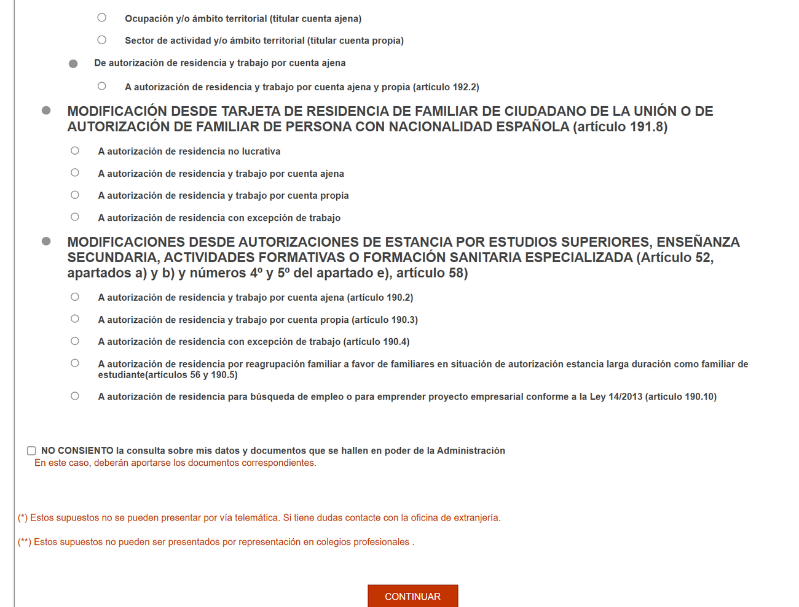
«NO CONSIENTO» — без галочки. Далі CONTINUAR.
Я тут 4,5 роки — однаково «más de un año»? Так. «Більше року» — будь-який строк від року; 191.2 — лише для тих, хто прожив менше року.
та сама радіокнопка — пункт 191.3 охоплює і найм, і роботу на себе.
Вкладка 2. DATOS DEL EXTRANJERO/A
8Ті самі дані, що в розділі 1 паперового EX-26:
Поле
Що вписати (приклад Оксани)
* Pasaporte / * N.I.E.
FX000000 / Y0000000Z (NIE — одним рядком)
* 1º Apellido / 2º Apellido
SHEVCHENKO / порожньо
* Nombre
OKSANA
* Sexo / * Estado civil
списки: Mujer / Casada
* Fecha de nacimiento
15/04/1985
* Lugar de nacimiento
KYIV (як у паспорті)
* País de nacimiento / * Nacionalidad
списки: Ucrania / Ucrania
Nombre del padre / de la madre
TARAS / OLHA
Persona tutelada
не відмічати
* Tipo de vía
список: Calle
* Domicilio
MAYOR — лише назва вулиці (див. застереження нижче)
* Numero / Piso
10 / зі списку (найближчий до «Bajo»)
Letra
номер дверей (puerta): 2 — окремого поля для дверей немає, а Letra його приймає
Escalera, Bloque, km
якщо є в адресі; інакше порожньо
* Provincia
уже стоїть провінція подачі
* Municipio / * Localidad
списки: ваше місто (обидва)
* Código Postal
03001
Teléfono / Teléfono móvil / E-mail
достатньо мобільного й e-mail
Representante legal
порожньо
«SI Hijas/os a cargo en edad de escolarización en España»
галочка, якщо є діти 6–16 років
Де вписати номер дверей (puerta)? Окремого поля немає — пишіть його в поле Letra, воно номер приймає. Не дописуйте двері в поле Domicilio: ми спробували «, PUERTA 88», і в згенерованому EX-26 лишилося тільки «CALLE <назва>» — кома і все після неї зникли. Адресу однаково перевірте в PDF-чернетці на кроці 18. Якщо номер дверей загубився — не страшно: повна адреса є в падроні й у підписаному паперовому EX-26, який ви додаєте як документ, а сповіщення приходять в електронну скриньку.
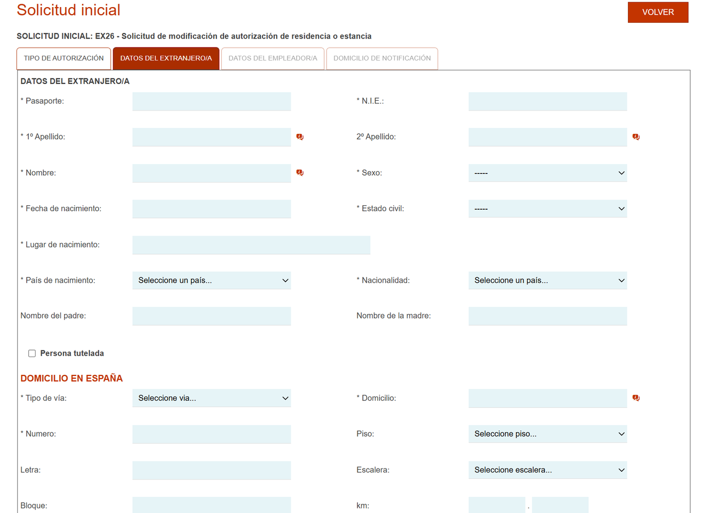
Верх вкладки.
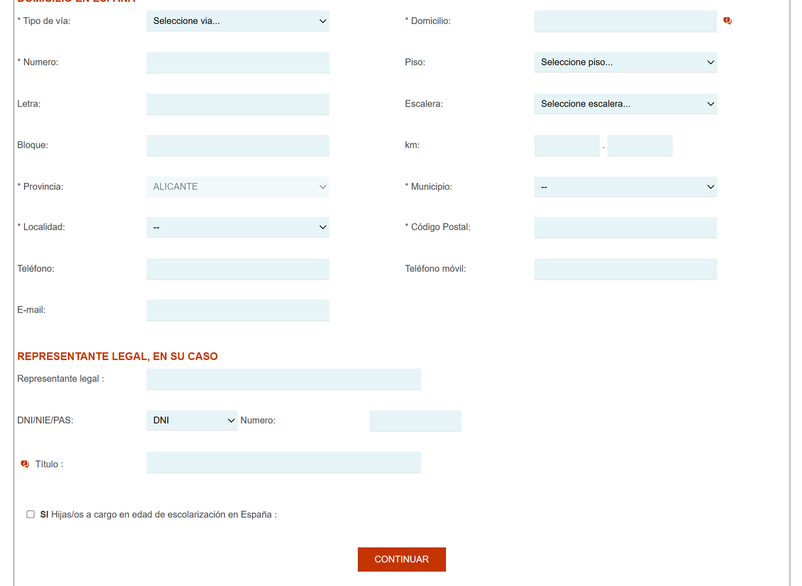
Низ вкладки: адреса, телефони, представник (порожньо), галочка про дітей.
Вкладка 3. DATOS DEL EMPLEADOR/A
9На цій вкладці немає обов'язкових полів — її можна пропустити. Але раджу вписати свої дані як autónomo: пункт 191.3 звучить як «cuenta ajena y propia», а це єдине місце в онлайн-формі, де видно, що ви працюєте на себе.
Поле
Що вписати
Nombre/Razón Social
ваше ім'я та прізвище: OKSANA SHEVCHENKO
DNI/NIE/PAS + Documento
у списку — NIE (за замовчуванням стоїть NIF/DNI!), номер Y0000000Z
Actividad
найближче до вашої діяльності, напр. «Programación, consultoría y otras actividades relacionadas con la informática»
Ocupación
найближча професія зі списку (для ІТ — аналітики / програмісти / техніки)
Domicilio social del centro de trabajo
якщо працюєте з дому — домашня адреса, як у вкладці 2
Representante legal
порожньо
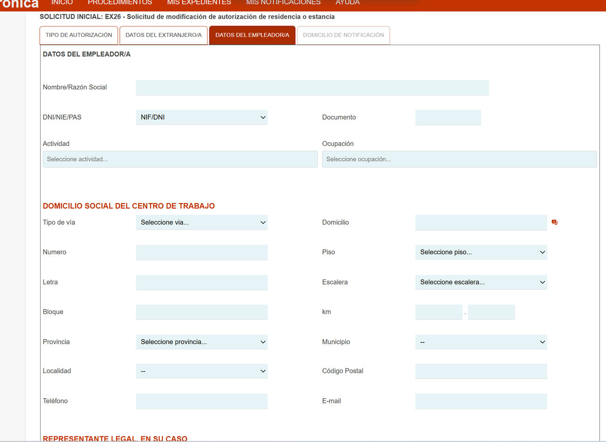
Зірочок немає — поля необов'язкові.
тут обов'язково дані роботодавця: назва компанії, тип документа NIF/CIF і номер, Actividad (галузь компанії), Ocupación (ваша посада), адреса робочого місця, телефон, e-mail. Усе це є у трудовому договорі.
Вкладка 4. DOMICILIO DE NOTIFICACIÓN
10Натисніть угорі кнопку «Domicilio del solicitante» — адреса підставиться з вкладки 2. Перевірте:
* Nombre/Razón Social — ваше ім'я;
* DNI/NIE/PAS — у списку NIE (стоїть NIF/DNI) і номер;
мобільний і e-mail.
Поставте галочку «Consiento que las comunicaciones y notificaciones se realicen mediante puesta a disposición en sede electrónica…»: рішення і запити прийдуть в електронну скриньку, а не поштою. Відкривати їх треба буде тим самим сертифікатом, з яким подаєте.
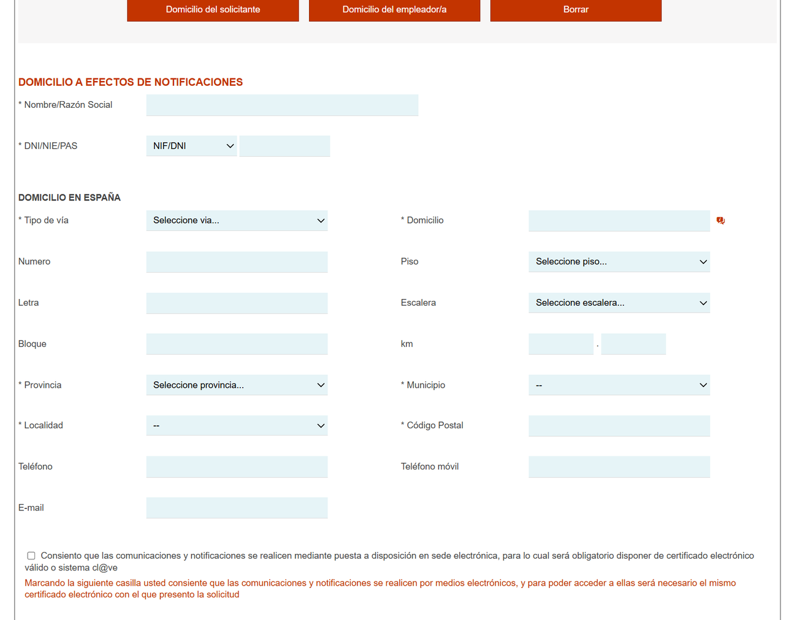
Кнопка «Domicilio del solicitante» заповнює адресу за вас.
11Після CONTINUAR вискочить «Confirmación de protección de datos» — стандартне повідомлення про обробку персональних даних. Aceptar.
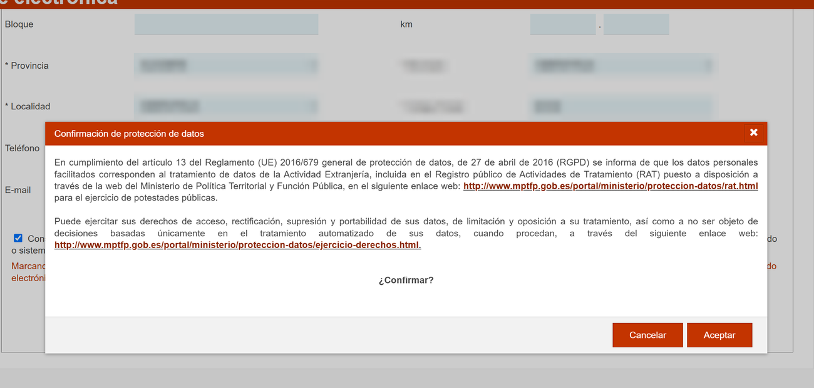
Aceptar.
12Сторінка «Opciones de presentación» схожа на попередню, але тепер угорі є «Id formulario inicial: I0…» — це номер вашої заяви. Запишіть його: разом із датою подачі він потрібен, щоб потім дізнатися номер справи. Натисніть праву кнопку «PRESENTACIÓN ELECTRÓNICA». Ліва («Descargar solicitud») — для паперової подачі в офісі; autónomos зобов'язані подавати електронно.
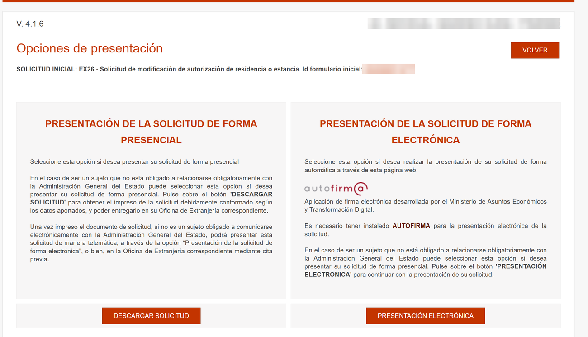
Права кнопка. Id formulario (розмитий) — запишіть.
13Декларація «DECLARO bajo mi responsabilidad, ante las Autoridades españolas, que el sujeto legitimado para presentar esta solicitud se encuentra en territorio español» — ви підтверджуєте, що зараз в Іспанії. Відмітьте і продовжуйте.
3. Завантаження документів
14Сторінка «Presentación documentación». Вгорі — перелік: обов'язкові для вашого пункту Pasaporte і Recursos económicos, а також «можливо потрібні» (таса, ліцензії, інвестиції, платоспроможність компанії, навчання дітей, трудовий договір, інші). Нижче — правила: pdf, jpg, tif, gif; до 6 МБ; обмежені символи в назві.
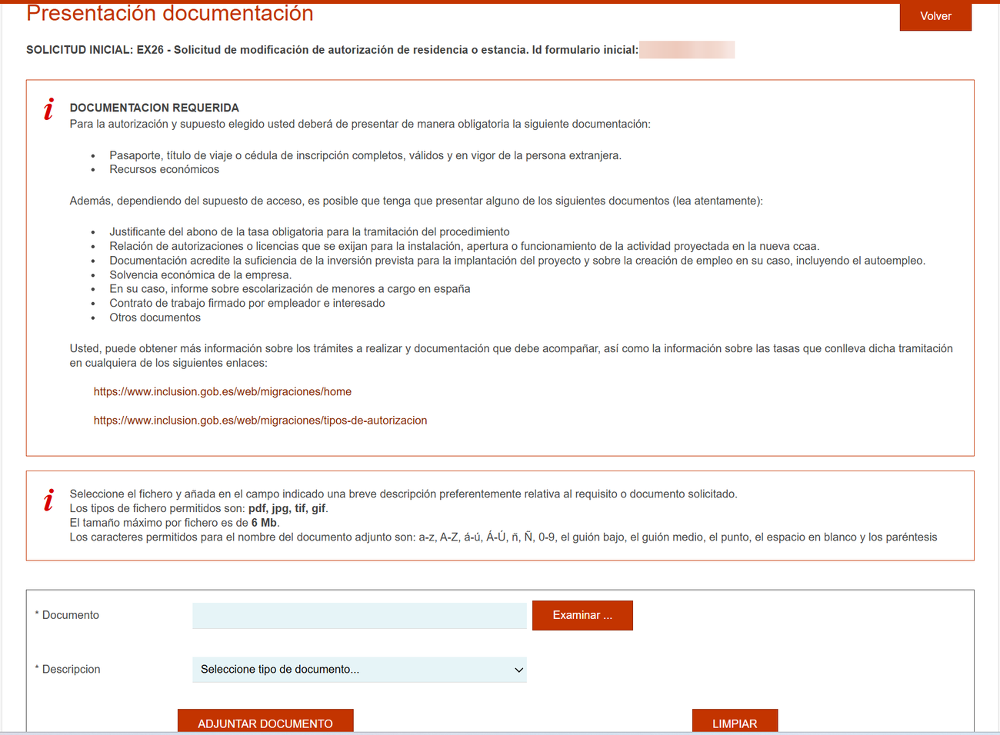
Перелік документів і правила для файлів.
Для кожного файлу: Examinar… → виберіть файл → у списку Descripción — тип → ADJUNTAR DOCUMENTO. Файл з'явиться в таблиці «Documentos adjuntados» нижче. CONTINUAR — лише коли завантажено все.
15Головне правило списку Descripción: кожен конкретний тип приймає тільки один файл. Спроба додати другий дає помилку «La descripción seleccionada del documento a adjuntar ya ha sido aportado, solo puede adjuntar un documento por cada documento obligatorio». Багато файлів приймає лише «Otros documentos que desee aportar». Тому під конкретний тип ставимо один головний файл, а все інше — як «Otros».
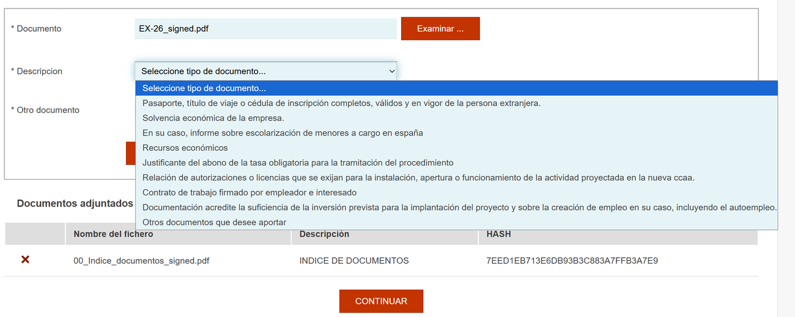
Усі варіанти списку Descripción для EX26 / 191.3.
Файл
Тип у списку Descripción
Паспорт
Pasaporte, título de viaje o cédula de inscripción…
Квитанція про оплату таси 052
Justificante del abono de la tasa…
Memoria de actividad (підписана)
Recursos económicos
Довідка про навчання дитини (якщо дітей двоє — друга як «Otros»)
En su caso, informe sobre escolarización de menores…
Усе інше
Otros documentos que desee aportar
Не вибирайте для cuenta propia: «Contrato de trabajo firmado por empleador e interesado» (у вас договір послуг, а не трудовий), «Solvencia económica de la empresa» (про компанію-роботодавця), «Relación de autorizaciones o licencias…» та «Documentación … inversión prevista…» (для нового бізнесу; ви продовжуєте вже наявну діяльність).
трудовий договір — тип «Contrato de trabajo firmado por empleador e interesado»; vida laboral або nóminas — «Recursos económicos»; решта — «Otros».
16Коли вибрано «Otros documentos», з'являється обов'язкове поле «* Otro documento» — короткий опис саме цього файлу (не наступного).
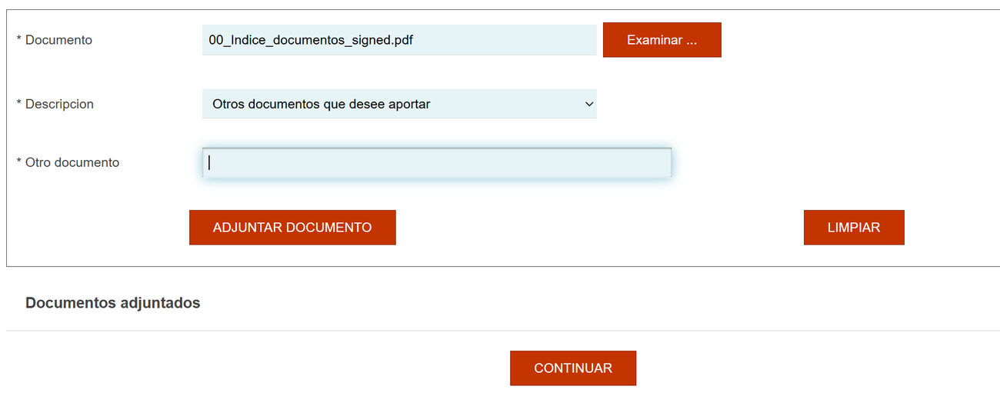
Для «Otros» — короткий опис файлу.
Поле «з'їдає» літери! Воно не приймає частину символів (наголоси, «º», дефіс, кома тощо) і непомітно викидає літери поруч із ними: у нас вийшло «TASA 79 052», «ROTECCION», «SITUACI CENSAL». Пишіть лише латинські літери без наголосів, цифри й пробіли і перевіряйте рядок у таблиці після кожного завантаження. Помилка суто косметична — інспектор бачить і файл, — але виправити легко: червоний хрестик видаляє рядок, і файл можна завантажити знову.
Готові описи без проблемних символів:
Файл
Текст для «Otro documento»
Índice
INDICE DE DOCUMENTOS
EX-26 (підписаний)
IMPRESO DE SOLICITUD EX26 FIRMADO
Картка ТЗ
TIE VIGENTE PROTECCION TEMPORAL
Реєстрація таси
JUSTIFICANTE DE REGISTRO TASA 790 052
Падрон
CERTIFICADO DE EMPADRONAMIENTO
Situación censal
CERTIFICADO DE SITUACION CENSAL AEAT
Vida laboral
INFORME DE VIDA LABORAL
Антецеденти
CERTIFICADO DE ANTECEDENTES PENALES
Договір
CONTRATO DE SERVICIOS 15 CON ACME SOLUTIONS OU
Adenda / переклад
ADENDA AL CONTRATO 15 CON TRADUCCION AL ESPANOL
Renta
DECLARACION IRPF 2025 (і т. д. для кожного року)
390
MODELO 390 2025
130/303/349
MODELOS 130 303 Y 349 1T 2T 3T 2026
Фактури
FACTURAS DE ABRIL A OCTUBRE 2026
17Перевірте таблицю «Documentos adjuntados»: кількість рядків = кількість пунктів в índice, у кожного правильний тип і опис. Колонка HASH — контрольна сума файлу, на неї не зважайте. Потім CONTINUAR.
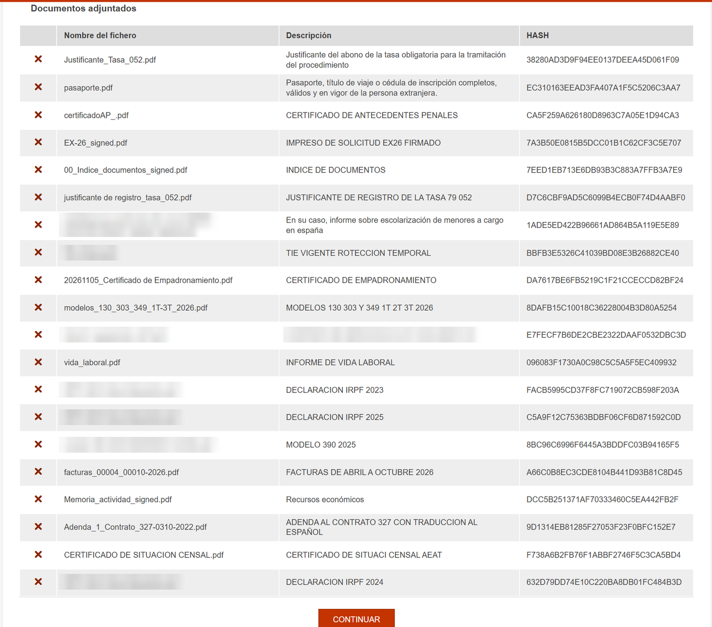
Реальний список із 20 файлів (назви з персональними даними розмиті). Видно й «з'їдені» літери в описах.
4. Підпис і реєстрація
18Сторінка «Registro de entrada». Натисніть «Descargar documento PDF con los datos a registrar» і перегляньте PDF перед підписом.
Це EX-26, який Mercurio згенерував із ваших відповідей. Файлів у ньому немає — так і має бути; список файлів ви вже перевірили на кроці 17.
Перевірте: ім'я, NIE, дату народження, адресу (чи не зник номер дверей), галочку 191.3, «діти — SÍ». У розділі 3 («representante») з'являться ваші ж дані — так система позначає, хто подає; це нормально.
Внизу Mercurio сам впише адресата («SR/SRA DELEGADO/A O SUBDELEGADO/A DEL GOBIERNO») і код DIR3 вашої провінції.
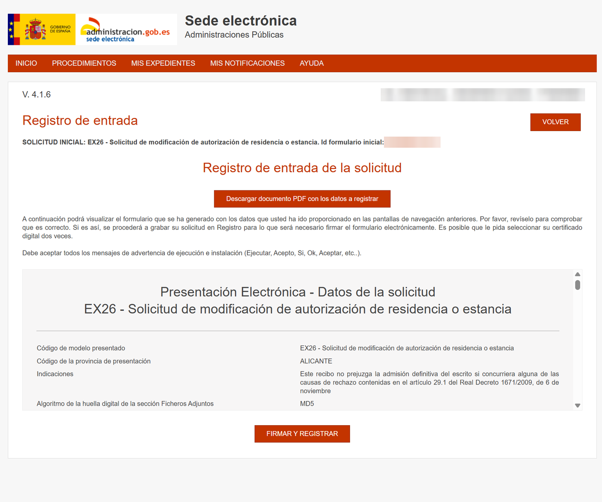
Спершу «Descargar documento PDF…» для перевірки, потім «FIRMAR Y REGISTRAR».
Якщо все гаразд — FIRMAR Y REGISTRAR. Відкриється AutoFirma; сертифікат можуть попросити двічі. Усі попередження приймайте (Ejecutar, Aceptar, Sí).
Знайшли помилку в чернетці? Кнопка VOLVER повертає назад, але є ризик, що завантажені файли доведеться додавати знову. Дрібниці (наприклад, номер дверей, який є в падроні та підписаному EX-26) не варті цього.
19«Presentación finalizada — Su solicitud ha sido aceptada y registrada de forma correcta». Завантажте обидва файли:
DESCARGAR RESGUARDO — офіційний доказ подачі («SI es válido»): номер реєстрації REGAGE…, дата й час, офіс, і список усіх файлів, що дійшли. Назвіть, напр., Resguardo_presentacion_EX26.pdf і збережіть ще й у хмару.
DESCARGAR PRESENTACIÓN — копія заяви зі штампом реєстрації, для себе («NO es válido» як доказ).
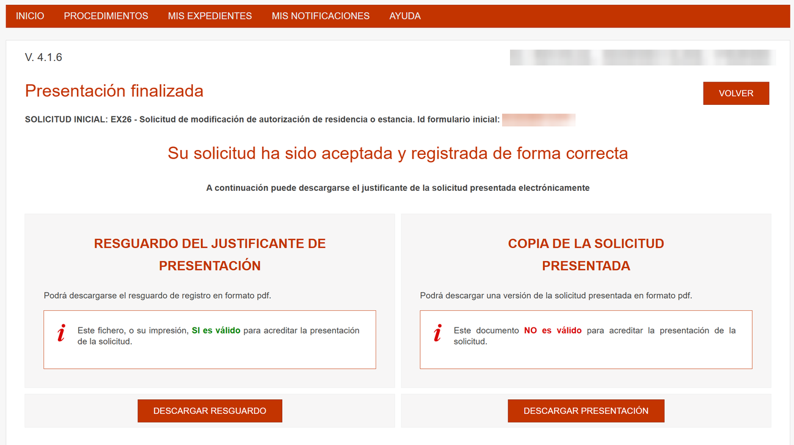
Ліва кнопка — головний документ.
Відкрийте resguardo і перевірте, що в розділі «Adjuntos» стільки ж файлів, скільки в índice. Після цього сторінку можна закривати.
5. Після подачі
Що
Як і коли
Номер справи (expediente)
З'являється через кілька днів. Mercurio → Individual → вхід → ліва кнопка «CONTINUAR CONSULTA DE SOLICITUD EXISTENTE». Знадобляться: Id formulario (I0…), дата подачі, громадянство, рік народження.
Раз на тиждень заходьте в Dehú (тим самим сертифікатом). Якщо офіс попросить донести документ (requerimiento), зазвичай дають 10 днів; додати документ можна через Mercurio → «Aportar documentos a expedientes». У нашому resguardo каналом сповіщень реєстру вказано «Correo», хоч згоду на електронні сповіщення дано, тож поглядайте й у поштову скриньку.
Таса 062
Лише якщо офіс прямо попросить (див. Крок 1).
Строк рішення
3 місяці від реєстрації; якщо відповіді немає — це вважається відмовою (негативне мовчання), яку можна оскаржити. Поки триває розгляд, ви працюєте як і раніше.
Після схвалення
Спершу подайте відмову від тимчасового захисту (renuncia) і збережіть квитанцію, потім запишіться на відбитки пальців для нової TIE (таса 790-012 у поліції, протягом 1 місяця) — див. кроки 11–12.
6. Питання, які виникали
Чекбокс у формі таси не клікається. У списку REGLAMENTO EXTRANJERÍA вибрано RD 316/2026 — змініть на RD1155/2024 (Крок 1, таса).
Старі посилання на sede.administracionespublicas.gob.es не відкриваються. Інформаційні сторінки міністерства переїхали на mptmd.sede.gob.es, Mercurio — на mercurio.delegaciondelgobierno.gob.es. Окремі сервіси (оплата тас, сам Mercurio всередині) досі показують старий домен в адресному рядку — це нормально.
Чи треба окремо завантажувати EX-26, якщо Mercurio його генерує? Не обов'язково. Ми додали підписаний бланк як «Otros» — це не шкодить і зберігає повну адресу.
Чому вкладка «Empleador» у Mercurio заповнена, а в паперовому EX-26 розділ 2 порожній? Для cuenta propia роботодавця немає; онлайн ми вписали себе, щоб підкреслити роботу на себе. Розбіжність ні на що не впливає.
Чи можна подавати в неробочий день чи ввечері? Mercurio працює цілодобово. Подача в неробочий день вважається зробленою на початку наступного робочого (так написано в resguardo).